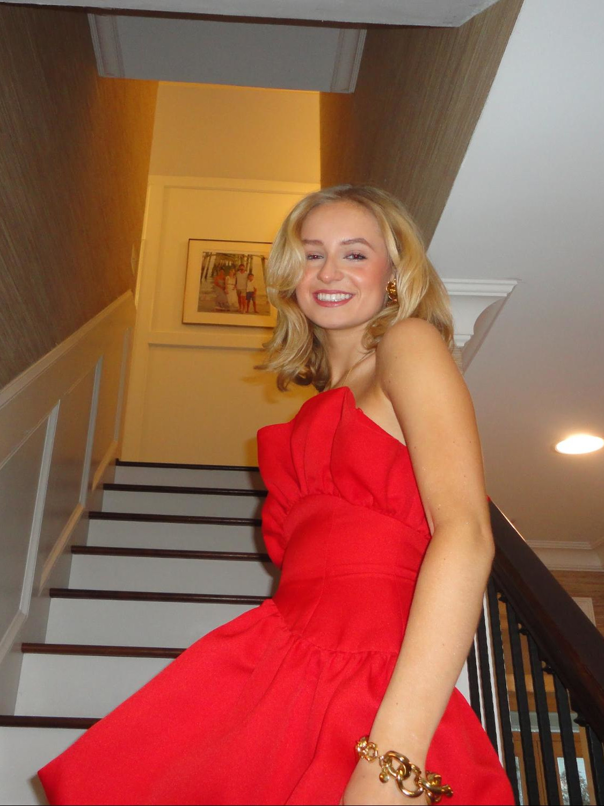

Let me tell you about myself.

This section is obviously still a work in progress
My name is Alleta Garner. I’m 16 years old and I attend Needham B. Broughton High School, as many of you know! I love to hangout with my friends and spend time with my family including my two dogs named Ivy and Parker. In my free time, I like to write stories, journal or make art.
This section is obviously still a work in progress
I’m running to be second vice president for Broughton! You may be wondering that that role entails, and why you should vote for me. I’ll explain that all to you!
The second vice president of Broughton not only assists the president and first vice president in decision making and actions, but the role also includes being president of the Interclub Council. This means helping our clubs be active and running.
As a member of multiple clubs with multiple leadership positions in them, our clubs are incredibly important to me. If elected as second vice president, I will take on my role as president of the Interclub Council by not only continuing to help our clubs thrive, but also creating an awards system for the most active clubs.
This section is obviously still a work in progress
something goes here eventually